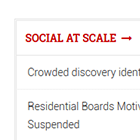
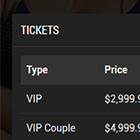
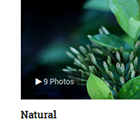
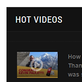

The only way to go great work is to love what you do.
If you haven't found it yet, keep looking. Don't settle. As with all matters of the heart, you'll know when you find it.
The only way to go great work is to love what you do.
If you haven't found it yet, keep looking. Don't settle. As with all matters of the heart, you'll know when you find it.
WELCOME TO JA TELINE V
The Best News Portal for Joomla, with enhanced CCK features. Excellent for news, newspaper, magazine, publishing and review sites.
Enjoying the all new article
There has never been a better way for your Joomla site to deliver a great reading experience. Introducing Article Reading Mode for the first time ever.
Favorite contents in one place
Extend Joomla com_content beyond standard articles just got easier, with enhanced Custom Content Types.

Topic
New way to organise and show related articles. Stay on topic via article suggestions.

Event
Simply create, edit and manage your events right in the native Joomla com_content.

Gallery
Adding image galleries is now super-easy and simple. A lightweight solution for your choice.

Video
Easy way to build a real media hub without the need of 3rd extension. All videos in 1 place.
Uber is a web development company devoted to developing Creative products across Web Platforms for both Personal and Professional purposes.